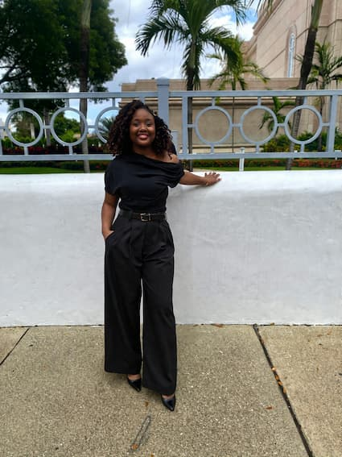

Caina Emmanuella Gaspard | WDD 130

Hi. My name is Caina Emmanuella Gaspard and I am from Haiti. I enjoy crafting, cooking, hosting, and learn new languages. I am currently studying Web development and design and I am excited to improve.

Hi. My name is Caina Emmanuella Gaspard and I am from Haiti. I enjoy crafting, cooking, hosting, and learn new languages. I am currently studying Web development and design and I am excited to improve.